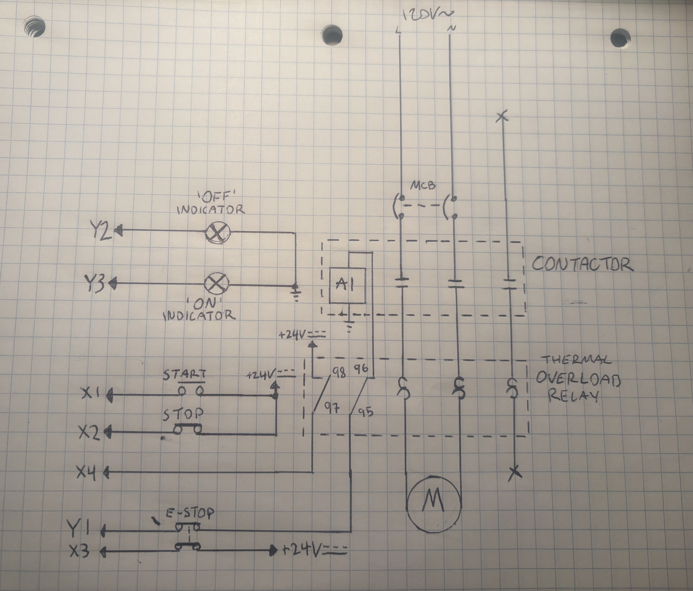
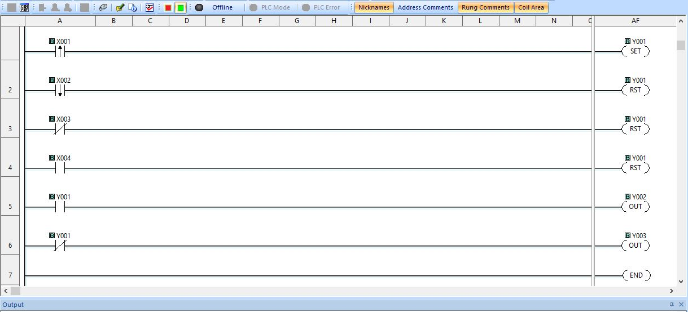

My goal going into this project was to gain some knowledge and insight into the world of industrial electronics and programming. The motor starter is such a common circuit that exists in so many different applications, so it seemed like a great place to start!

I began by researching what a typical motor starter circuit consists of. I drew out some sketches and thought hard about what kind of features I would want to implement beyond just starting and stopping the motor. An E-Stop and thermal overload protection immediately came to mind as two safety features I could easily implement. The key was to place the E-Stop and overload NC contacts in series with the contactor coil to create reliable physical protection in case of a fault or emergency. I also decided adding indicators tied to the status of the motor would be a nice touch as well.

With my schematic drawn and components decided on, I began writing the program. I started out with just latching the output bit to the contactor coil via the momentary start button and unlatching it via the momentary stop button. I then integrated the secondary NC contacts of the E-Stop to send a signal to the PLC which would unlatch my contactor coil output if tripped. The purpose of this is to prevent the motor from immediately restarting as soon as the E-Stop is reset and the physical connection to the coil is restored. I followed a similar structure with the NO contact of the overload relay. If these contacts close, there is a motor fault and the contactor coil must be de-energized. Lastly, I used the contactor coil output as an XIC/XIO bit to turn on my green/red indicator lights on depending on whether or not the motor is running.
Here is the circuit in action. The program works exactly as intended to control the motor and ensure safe operation. Since this overload's NO contacts will only close if there is truly a thermal fault, I simulated the condition by jumping the PLC side to +24VDC. This project was another great challenge and introduction to the world of industrial controls. Assembling, measuring, and testing the 24VDC and 120VAC sides respectively was great experience that lends itself to so many other applications. I want to continue this project by integrating an analog sensor to start the motor based on a given set point like temperature, humidity, pressure, liquid level, etc. To be continued soon!